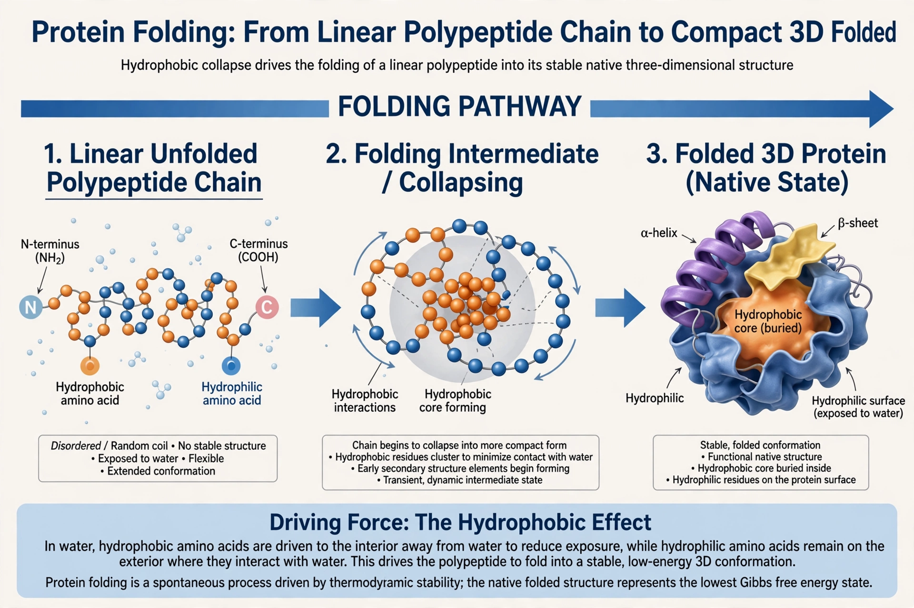

| Protein folding | |
|---|---|
 An unfolded polypeptide (left) folds into its native three-dimensional structure | |
| Process | Physical folding of a polypeptide chain into a functional 3D structure |
| Key drivers | Hydrophobic effect, hydrogen bonding, van der Waals forces |
| Timescale | Microseconds to minutes |
| Assistance | Molecular chaperones (in vivo) |
| Associated diseases | Alzheimer's, Parkinson's, prion diseases, cystic fibrosis |
Protein folding is the physical process by which a protein chain is translated into its native three-dimensional structure, typically a "folded" conformation in which the molecule becomes biologically functional. In this spontaneous self-assembly process, the linear polypeptide leaves a random coil and adopts a specific, stable shape.
The information for folding is encoded in the amino acid sequence itself — a principle established by Christian Anfinsen's experiments on ribonuclease in the 1950s–60s, which showed that a denatured enzyme could refold into its active form with no external template, work recognised by the 1972 Nobel Prize in Chemistry. Anfinsen's conclusion is often called the thermodynamic hypothesis: the native structure is the lowest free-energy state available to the chain.
Folding is driven chiefly by the tendency of hydrophobic amino acid side chains to be buried in the protein interior, away from water (the hydrophobic effect), which pays the entropic cost of ordering the chain. Hydrogen bonds between backbone groups stabilise α-helices and β-sheets, while van der Waals packing, salt bridges and — in some proteins — covalent disulfide bonds lock the final structure in place. The energy landscape of folding is often pictured as a funnel: many unfolded conformations at high energy converge through progressively more native-like intermediates to the folded state.
In 1969 Cyrus Levinthal pointed out that a chain of 100 residues could in principle sample an astronomical number of conformations — far more than could ever be searched randomly in the age of the universe — yet real proteins fold in milliseconds to seconds. The resolution of this paradox is that folding is not a random search: the energy landscape is biased, with local structure forming first and guiding the chain down the folding funnel, so most of conformational space is never visited.
In the crowded cell, many proteins fold with help from molecular chaperones such as the Hsp70 family and the barrel-shaped chaperonins (GroEL/GroES in bacteria, TRiC in eukaryotes), which prevent aggregation and give chains a protected environment in which to fold. Proteins that fail to fold correctly are usually tagged with ubiquitin and destroyed by the proteasome.
Incorrectly folded proteins can aggregate into insoluble amyloid fibrils. Misfolding is implicated in Alzheimer's disease (amyloid-β and tau), Parkinson's disease (α-synuclein), Huntington's disease (huntingtin), and the prion diseases such as Creutzfeldt–Jakob disease, in which a misfolded protein templates the misfolding of others. Cystic fibrosis results mainly from the misfolding and premature degradation of the CFTR chloride channel.
Predicting a protein's fold from its sequence was a grand challenge for five decades, assessed in the biennial CASP experiments. In 2020 the deep-learning system AlphaFold2 achieved near-experimental accuracy for most single-chain proteins at CASP14, and its developers released predicted structures for over 200 million proteins — a breakthrough recognised by the 2024 Nobel Prize in Chemistry, shared by Demis Hassabis and John Jumper for prediction and David Baker for computational protein design.